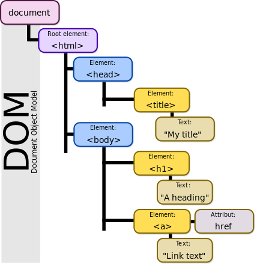

DOM (Document Object Model) nedir?
Bugün ki konumuzu incelemeden önce, Object-Orientated programlama hakkında az da olsa bahsetmemiz de fayda olduğunu düşünüyorum. Object-orientated programlamadaki amaç, bilginin nesnel terimler halinde saklanmasıdır. Örneğin, her nesnenin nasıl davranacağını belirleyebileceğimiz özellikler sayesinde nesnelere bir çok özellik kazandırabiliriz.
DOM nedir?
Document Object Model’in kısaltılmışı olan DOM, asla bir dil olmayıp, dilleri barındıran bir standart olarak tanımlanmaktadır.
Programlama dillerinin Object-Orientated olarak HTML ile anlaşması için HTML’i nesneler bütününe çevirecek bir ara standart gereklidir. DOM da tam bu noktada işe el atmaktadır. DOM, HTML ile programlama dilleri arasında bir standart oluşturarak bu dillerin HTML den bilgi alıp, bilgi vermesine yardımcı olur. DOM, Nesneler ve özelliklerden oluşur.
DOM’da HTML ile hazırladığınız sayfa, belge; bu belgenin içine yerleştirdiğiniz her türlü öğe ise nesne olarak adlandırılır.
DOM da nesnelerin birer öğe (element) olarak kullanılabilmesi için hiyerarşik bir düzen izlenerek çağrılmaları gerekir. HTML’deki her bir elamanın birbiri ile hiyearşik bir yapı oluşturması ile oluşur.
Neler yapar?
DOM bir ağaç dizini gibi bütün dokümanları birbirine bağlar. Birden fazla programlama dilleri destekler(JS, PHP, Java, ASP vb.) ve aynı zamanda dosya oluşturmak, elementleri ve içeriklerini silme/ekleme gibi fonsiyonları vardır.
Önemli nokta yazdığımız dilin DOM yapılarına bağlı olmasıdır.
<html> <head> <titte>Webmaster.Kitchen</titte> <script type="text/javascript"> document.formAdi.adiniz.value = 'Hakan Karataş'; document.getElementbyId('memleket').value = 'BAYBURT'; </script> </head> <body> <form name="formAdi" method="post" action=""> <input type="text" name="adiniz"> <input type="text" id="memleket"> </form> </body> </html>
HTML içerisine yerleştirilmiş öğeleri çağırmak için, içinde bulunduğu diğer öğelerin çağrılması bir yöntem iken, bir öğeye bir id vererek bu id üzerinden çağırmak da bir başka yöntemdir.
JavaScript kodumuzun ilk satırında metin kutusunun değeri hiyerarşik olarak çağrılmış ve değiştirilmiştir. İkinci satırda ise hiyerarşik yapı daha az önemsenerek JavaScript içindeki DOM’un temellerinden olan getElementById metodu kullanılmıştır.
JQuery’nin iyi anlaşılması için DOM mantığını iyi bir şekilde çözmekte fayda vardır.
Sonuç olarak eğer client-side olarak HTML’e daha fazla hükmetmek istiyorsanız, kullandığınız dil JavaScript, PHP, ASP vb. ne olursa olsun kesinlikle DOM un erişim yöntemlerini çok iyi biliyor olmanız gerekir.